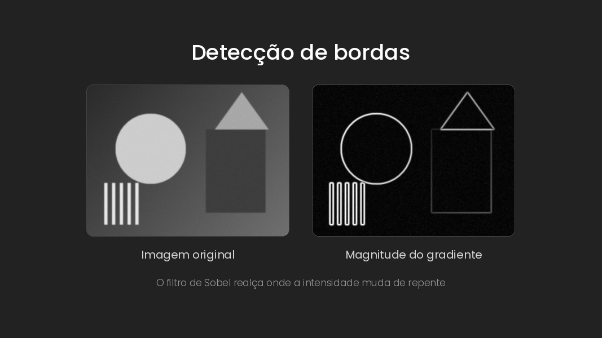

Essa aula foi sobre detecção de bordas, que no fundo é procurar as mudanças bruscas de intensidade da imagem. A ideia é que boa parte da informação de forma está nesses contornos, tanto que o desenho de linhas de um artista já é o suficiente pra gente reconhecer o que está ali. Uma borda é a fronteira entre duas regiões com níveis de cinza bem diferentes, e olhando a imagem como uma função, ela parece um penhasco: o valor cai ou sobe de uma hora pra outra.
Pra achar essas mudanças entra a derivada. A primeira derivada fica grande justamente onde a intensidade varia rápido, e como a imagem é discreta, dá pra calcular isso com a diferença entre vizinhos, do tipo f(x+1) menos f(x). Juntando a variação na horizontal com a vertical, você tem o gradiente, que é um vetor. A magnitude dele mostra a força da borda e a orientação aponta pra onde a intensidade muda mais rápido, sempre perpendicular à borda.
Na prática isso vira um filtro, aquelas máscaras pequenas que passam pela imagem calculando o novo valor de cada pixel a partir dos vizinhos. Tem o de Roberts, que é 2x2 e realça mais as bordas inclinadas, o de Prewitt, que é 3x3, e o de Sobel, que é o mais conhecido e dá peso 2 pros vizinhos do meio, então suaviza um pouco enquanto deriva.
O problema é que a derivada também amplifica ruído. Um pixel fora do tom dos vizinhos vira um pico grande, e o detector acaba enxergando borda onde não tem nada. A saída é suavizar antes de derivar, normalmente com um filtro gaussiano. E dá pra juntar as duas etapas, derivando a própria gaussiana e passando esse filtro de uma vez só na imagem.
Só que isso tem um preço. Quanto mais suavização, menos ruído, mas as bordas ficam mais borradas e menos precisas. No fim, o tamanho do filtro define a escala do que você quer enxergar: o detalhe fino ou só o contorno grande. Daí em diante o material entra no detector de Canny, que junta essas ideias todas em um algoritmo só, e deve ser o assunto da próxima aula.